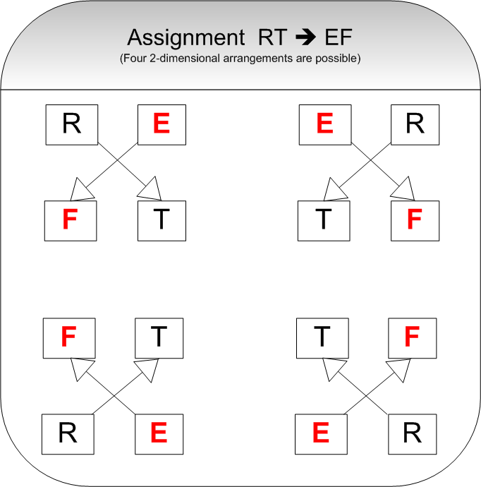
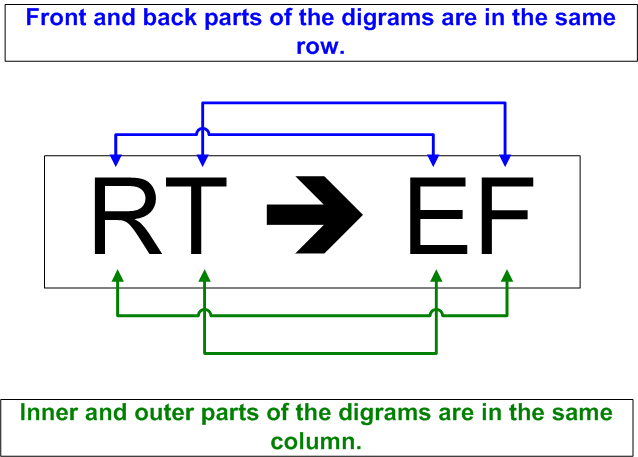

This section provides an example illustrating the use of the Playfair encryption algorithm. To make it easier to follow the steps that need to be performed with CrypTool, the example is illustrated with a number of screenshots.
We start with investigating the Playfair encryption algorithm by opening a document, encrypting it and decrypting it again. After that we will try to find the key that was used to encrypt the plaintext by using the manual Playfair analysis step by step.
1. Playfair Encryption
1.1 Open the document to be encrypted: e.g. CrypTool-en.txt, which is part of the online
help section. You can open that document via the menu File \
Open.
1.2 Now we encrypt this document using the Playfair encryption algorithm.
From the menu, choose Encrypt/Decrypt \ Symmetric (classic) \ Playfair. The following dialog box is displayed:

Using the standard 5x5 key matrix, the Playfair alphabet consists of the normal capital letters A to Z, where J is taken out.
1.3 Please use PEGASOS as the key.
From this key the following Playfair key matrix will be calculated:
| P | E | G | A | S |
| O | B | C | D | F |
| H | I | K | L | M |
| N | Q | R | T | U |
| V | W | X | Y | Z |
1.4 When you push the button Encrypt the Playfair key entry dialog will be closed and two windows are opened: one with the pre-processed plaintext and another with the encrypted text:

CrypTool ist (German for CrypTool is …) will be pre-processed to
CRYPTOXOLIST:1.5 Now, let us manually encrypt the pre-processed plaintext CRYPTOXOLIST. The
following key matrix rectangles have to be considered:
|
< -- > |
|
For two dimensional rectangles we enumerate the edges as follows: we start with the first plaintext character, then choose the character in the other edge on the same row, then the second cleartext character. The last character is taken from the remaining edge.
In the less common case of one dimensional rectangles we also start with the first plaintext character, followed by the bottom resp. right neighbor, the second cleartext character and then its bottom resp. right neighbor.
The second and fourth character of the rectangle (the unused edges) are taken to be the encrypted
di-gram, in the example above: KXVANDVCMKAU.
1.6 To proceed with the next step (decryption) you can avoid entering the key again by recovering it from the ciphertext window. To do this
 or select menu Edit \ Show Key
or select menu Edit \ Show KeyNow the key matrix is stored in CrypTool's key store.
2. Playfair Decryption
We now can recover the plaintext of the document encrypted in the previous step.
2.1 Select the menu Encrypt/Decrypt \ Symmetric (classic) \ Playfair.
2.2 Enter the encryption key (PEGASOS). If you have saved the key in the
internal key storage then you can recover
it by clicking on the icon  .
.

2.3 Press the Decrypt button to recover the plaintext.
3. Manual analysis of the Playfair cipher
Let us now try to decipher a text encrypted with the Playfair cipher where we don't know the key (ciphertext-only analysis).
3.1 To do this we load the text to be decrypted from the file Playfair-enc-de.txt (this
file can be found in the examples directory distributed with CrypTool):

3.2 This text was created with the Playfair encryption algorithm without pre-processing: This option effectively leaves characters not contained in the Playfair alphabet unencrypted (e.g. blanks, punctuation marks, line feeds), so that the plaintext word and sentence boundaries are obvious.
Additionally, the insertion of the separating X between two equal, consecutive characters is switched off so double characters are left unencrypted.
3.3 CrypTool does only support a semi-manual analysis of the Playfair cipher. Therefore we need some clue about the document to be analyzed. Let us assume that the text is a German letter, which often start with the same words.
3.4 Let us now open the Playfair analysis dialog window by selecting the menu Analysis \ Symmetric Encryption (classic) \ Manual Analysis \ Playfair.
Here you see the text of the opened ciphertext file in the first row of the field "Analysis result".

3.5 We assume: The letter probably begins with Sehr geehrte Damen und Herren
(German for Dear Sirs).
Enter this text in the field labeled Expected plaintext. After each key stroke the Letter information table is updated.
We now already have a couple of di-grams fixed:
| SE > TG
HR > IG GE > HR EH > RI RT > EF ED > RX |
AM > VN
EN > IX UN > AX DH > LR ER > RG RE > GR |
3.6 By pressing the Generate matrix button, those parts of the Playfair key matrix are calculated, that can be determined based on the given information.

How to manually execute the calculation is shown here.
3.7 Press the button Synchronise analysis result \ Expected plaintext.
The selected checkbox-option Update expected plaintext causes that the result of
the decryption of the ciphertext based on the partial matrix is copied into the field
"Expected plaintext". Characters that cannot (yet) be decrypted are marked with the wildcard
character '*‘ and can now be replaced by guessing.
3.8 Now the character sequence E**.*IEMLI** catches our eye (at least the eye of
people knowing some German). If we complete this with the field "Expected plaintext" to read
EIN.ZIEMLICH two more di-gram mappings result: IN > BO and CH > HK. Based on
the previous matrix and the first di-gram mapping we conclude, that the characters I,N,B,O have to be in
the same column, i.e. B must be directly below I and O directly below N. Clicking on
Generate matrix swaps row two and four, then row two and three etc. resulting in the following key
matrix:
| * | * | * | K | B |
| U | Z | * | * | A |
| X | D | M | L | N |
| T | F | S | C | O |
| E | R | G | H | I |
3.9 Unfortunately, decrypting based on this matrix results in words that do not exist in the German language:
SEHR.GEEHRTE.DAMEN.UND.HERREN...EIN.ZIEMLICH.
GEHEIMER.*X**.BLEIOT.NICH*.IMMER.**NGE.GEHEIM..
MI*.*DXUNDLICHEN.GRUX**EN
However, we can now guess the cleartext with high probability, except for the word *X**, which we correct to read **** (this is to avoid conflicts). We now correct the remaining words to read:
SEHR.GEEHRTE.DAMEN.UND.HERREN...EIN.ZIEMLICH.
GEHEIMER.****.BLEIBT.NICHT.IMMER.LANGE.GEHEIM..
MIT.FREUNDLICHEN.GRUESSEN
3.10 This results in more di-gram mappings BT > TF, TI > BE, LA > NW, TF > BZ, RE > FT, SS > KK and UE > XT. One more click on Generate matrix yields:
SEHR.GEEHRTE.DAMEN.UND.HERREN...EIN.ZIEMLICH.
GEHEIMER.TE**.BLEIBT.NICHT.IMMER.LANGE.GEHEIM..
MIT.FREUNDLICHEN.GRUESSEN
| T | F | S | K | B |
| U | Z | V | W | A |
| X | D | M | L | N |
| * | * | * | C | O |
| E | R | G | H | I |
3.11 In a final step we correct TE** to read TEXT giving the
di-gram mapping XT > PU. The Playfair analysis now gives us the key matrix
| T | F | S | K | B |
| U | Z | V | W | A |
| X | D | M | L | N |
| P | * | * | C | O |
| E | R | G | H | I |
3.12 The cleartext originally had been encrypted with the password HIERGIBTESWASZUENTDECKEN
(see advice regarding the key matrix), and the options Preformat text and Ignore
duplicates within the key phrase were deactivated. We finally get the complete plaintext:
SEHR.GEEHRTE.DAMEN.UND.HERREN...EIN.ZIEMLICH. GEHEIMER.TEXT.BLEIBT.NICHT.IMMER.LANGE.GEHEIM..MIT.FREUNDLICHEN.GRUESSEN
3.13 After clicking the button Output results of analysis, the Playfair analysis dialog window is closed and the cleartext is displayed.
Remark:
Advice regarding the key matrix:A cyclicly shifted key matrix leads to the same result. Thus, the originally chosen password cannot be concluded from the calculated matrix.
4. Manual calculation of the key matrix
We now show how the complete key matrix can be determined manually based on guessed cleartext fragments and the Playfair encryption rules.
| * | * | * | * | * |
| F | S | * | * | T |
| * | * | * | A | U |
| D | * | L | N | X |
| R | G | H | I | E |
Based on the known di-gram mapping AM > VN we can extend the matrix, because there is only on position in the fourth row left where the character M can possibly fit:
| * | * | * | * | * |
| F | S | * | * | T |
| * | V | * | A | U |
| D | M | L | N | X |
| R | G | H | I | E |
The following graphics show how a found assignment RT > EF (see chapter 3.5 above) can be aligned:
a) The letters form a rectangle.

b) The letters are all in one row or one column.
